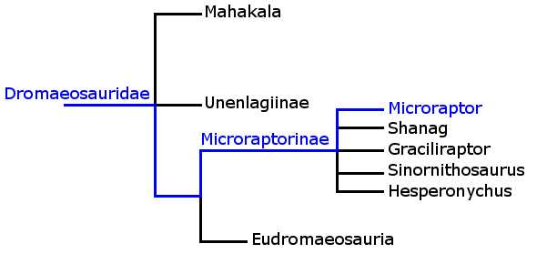

Unravelling the Evidence
Specimens:
{kind=link}
Name: Microraptor zhaoianus
Age: ~120 million years
Size: ~50cm long
Microraptor is a closely related to birds, possessing full flight feathers and well formed wings. However it shows evidence of a novel form of flying: all four limbs were covered in flight feathers. Microraptor was described in 2000, and demonstrates how much we still have to learn about dinosaurs and feathers - it was not a simple development from down to flight feathers in a straight evolutionary line into birds, but rather feathers were utilised in several different ways by various groups of dinosaurs.
Microraptor and relatives - most discovered in the Liaoning province - indicate that feathers most definitely took hold in this group. Earlier examples of feathers seem isolated, but most well preserved specimens closely related to birds have some form of plumage. This could indicate that previous forms of feathers were wrongly identified, or perhaps bird-like dinosaurs had a lifestyle and anatomy well suited to developing feathers.
References:
Longrich, N.R. & Currie, P.J., 2009. A microraptorine (Dinosauria–Dromaeosauridae) from the Late Cretaceous of North America. Proceedings of the National Academy of Sciences, 106(13), pp.5002 -5007.
Xu, X., Zhou, Z. & Wang, X., 2000. The smallest known non-avian theropod dinosaur. Nature, 408(6813), pp.705-708.
Image Credit:
Martyniuk, M., 2009. Microraptor mmartyniuk.png. Wikimedia Commons. Available at: http://commons.wikimedia.org/wiki/File:Microraptor_mmartyniuk.png [Accessed December 11, 2010].
{kind=link}